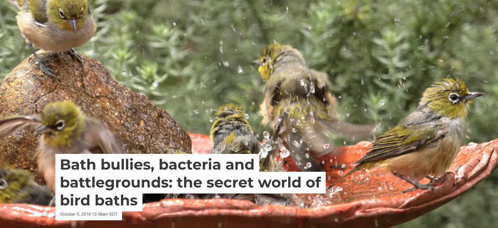

Please add alt text to your posts
Please add alt text (alternative text) to all of your posted graphics for #TidyTuesday.
Twitter provides guidelines for how to add alt text to your images.
The DataViz Society/Nightingale by way of Amy Cesal has an article on writing good alt text for plots/graphs.
Here’s a simple formula for writing alt text for data visualization: ### Chart type It’s helpful for people with partial sight to know what chart type it is and gives context for understanding the rest of the visual. Example: Line graph ### Type of data What data is included in the chart? The x and y axis labels may help you figure this out. Example: number of bananas sold per day in the last year ### Reason for including the chart Think about why you’re including this visual. What does it show that’s meaningful. There should be a point to every visual and you should tell people what to look for. Example: the winter months have more banana sales ### Link to data or source Don’t include this in your alt text, but it should be included somewhere in the surrounding text. People should be able to click on a link to view the source data or dig further into the visual. This provides transparency about your source and lets people explore the data. Example: Data from the USDA
Penn State has an article on writing alt text descriptions for charts and tables.
Charts, graphs and maps use visuals to convey complex images to users. But since they are images, these media provide serious accessibility issues to colorblind users and users of screen readers. See the examples on this page for details on how to make charts more accessible.
The {rtweet} package includes the ability to post tweets with alt text programatically.
Need a reminder? There are extensions that force you to remember to add Alt Text to Tweets with media.

Bird Baths
The data this week comes from Cleary et al, 2016 with the corresponding article Avian Assemblages at Bird Baths: A Comparison of Urban and Rural Bird Baths in Australia.
https://doi.org/10.1371/journal.pone.0150899.
Big thanks to Alison Hill for suggesting this data and finding another article.
Bird baths are a familiar sight in Australian gardens but surprisingly little is known about the precise role they play in the lives of birds.
In a dry continent such as Australia, bird baths may be vital to supporting an otherwise stressed bird population. We wanted to find out more, so we enlisted the help of thousands of citizen scientists across Australia to gather as much data as we could on how birds use bird baths.
And so the Bathing Birds Study was born. Started by researchers at Deakin University and Griffith University in 2014, this study involved collecting data online from 2,500 citizen scientists on bathing birds all over Australia.
Data on bird occurrence at bird baths were collected during “The Bathing Birds Study” that ran for a four week period in each of two seasons: austral winter (June 24th to July 26th 2014) and summer (January 27th to February 29th 2015). The study was promoted throughout Australia to recruit citizen scientists via: (1) media coverage (television, radio and newspapers), (2) social media (particularly via Facebook), (3) communication networks of a range of project partners, and (4) by targeting specific ornithological associations across Australia. Participants used an on-line data portal hosted on the Atlas of Living Australia (ALA) website (ala.org.au) to report the presence of birds visiting their bird bath during the survey. Other data collected included location of the bird bath, number of bird visits and photographs for validation of sightings. To aid participants with identification, an online field guide was available and participants could email photo and descriptions of birds to aid identification.
During the two survey periods, citizen scientists monitored their bird baths for 20 minutes, once per day and three times per week for four weeks (surveys which did not meet these criteria were not considered further) to detect all or most species visiting bird baths [38]. Due to the difficulty in accurately surveying birds in rain or high winds, we asked our citizen scientists to conduct surveys in relatively calm and rain-free weather. Data were pooled (sightings of each species across all surveys with each survey period) within each bird bath and expressed as a binary indicator of whether a given species was present or absent at a bird bath. Due to limitations of the technology platform used to collect data, we were only able to record occurrence/presence of birds at baths. It was not possible to capture surveys where there were no sightings present although such surveys are regarded as highly unlikely. Bird baths were assigned to:
Bioregion (Interim Biogeographic Regionalisation for Australia) regions, henceforth ‘bioregion’, a classification based on climate, vegetation and soil (National Land and Water Resources Audit, 2001). Bird data were collected from 42 bioregions but due to low participation (< 3 participants in an urban or rural area), assessment of differences were conducted on 8 (winter) and 13 (summer) bioregions. “Rural” or “urban” areas according to the Australian Bureau of Statistics (ABS) classification which uses an Australian Statistical Geography Standard that defines “urban” areas as having human populations of 1,000–100,000+ people while “rural” areas have < 999 people. Thus, rural areas may contain large natural areas as well as low-density human settlement.
Get the data here
# Get the Data
# Read in with tidytuesdayR package
# Install from CRAN via: install.packages("tidytuesdayR")
# This loads the readme and all the datasets for the week of interest
# Either ISO-8601 date or year/week works!
tuesdata <- tidytuesdayR::tt_load('2021-08-31')
tuesdata <- tidytuesdayR::tt_load(2021, week = 36)
bird_baths <- tuesdata$bird_baths
# Or read in the data manually
bird_baths <- readr::read_csv('https://raw.githubusercontent.com/rfordatascience/tidytuesday/main/data/2021/2021-08-31/bird_baths.csv')Data Dictionary
bird_baths.csv
| variable | class | description |
|---|---|---|
| survey_year | double | Year of survey |
| urban_rural | character | Urban or rural location |
| bioregions | character | Region of Australia |
| bird_type | character | Bird species |
| bird_count | double |
Note: Rows in the data that are missing survey_year, urban_rural, and bioregions are totals from the source data.
Cleaning Script
library(tidyverse)
raw_df <- readxl::read_excel("2021/2021-08-31/S1File.xlsx")
names(raw_df)
bird_df <- raw_df %>%
pivot_longer(names_to = "bird_type", values_to = "bird_count", cols = 4:last_col()) %>%
janitor::clean_names()
bird_df